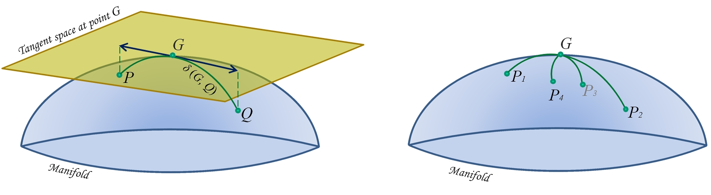

PosDefManifold Documentation
Requirements
Julia version ≥ 1.3
Installation
Execute the following command in Julia's REPL:
]add PosDefManifoldTo obtain the latest development version execute instead
]add PosDefManifold#masterAbout the Author
Marco Congedo is a Research Director of CNRS (Centre National de la Recherche Scientifique), working in Grenoble, France.
Overview

Riemannian geometry studies smooth manifolds, multi-dimensional curved spaces with peculiar geometries endowed with non-Euclidean metrics. In these spaces Riemannian geometry allows the definition of angles, geodesics (shortest path between two points), distances between points, centers of mass of several points, etc.
In this package we are concerned with the manifold P of positive definite matrices, either symmetric positive definite or Hermitian positive definite.
In several fields of research such as computer vision and brain-computer interface, treating data in the P manifold has allowed the introduction of machine learning approaches with remarkable characteristics, such as simplicity of use, excellent classification accuracy, as demonstrated by the winning score obtained in six international data classification competitions, and the ability to operate transfer learning (Congedo et al., 2017)🎓).
For a formal introduction to the P manifold the reader is referred to the monography written by Bhatia (2007)🎓.
For an introduction to Riemannian geometry and an overview of mathematical tools implemented in this package, see Intro to Riemannian Geometry in this documentation.
For starting using this package, browse the code units listed here below and execute the many code examples you will find therein. The core functions are contained in unit riemannianGeometry.jl.
Code units
PosDefManifold includes six code units (.jl files):
| Unit | Description |
|---|---|
| MainModule (PosDefManifold.jl) | Main module, constants, types, aliases, tips & tricks |
| riemannianGeometry.jl | The fundamental unit collecting all functions acting on the P manifold |
| linearAlgebra.jl | Collection of linear algebra routines |
| statistics.jl | Collection of statistics routines |
| signalProcessing.jl | Collection of signal processing routines |
| test.jl | Unit performing all tests |
Contents
- PosDefManifold Documentation
- Intro to Riemannian Geometry
- MainModule (PosDefManifold.jl)
- riemannianGeometry.jl
- linearAlgebra.jl
- statistics.jl
- signalProcessing.jl
- test.jl
Index
LinearAlgebra.trPosDefManifold.DiagOfProdPosDefManifold.choInvPosDefManifold.choInv!PosDefManifold.choLPosDefManifold.colNormPosDefManifold.colProdPosDefManifold.congruencePosDefManifold.det1PosDefManifold.dimPosDefManifold.distancePosDefManifold.distanceMatPosDefManifold.distanceSqrPosDefManifold.distanceSqrMatPosDefManifold.evdPosDefManifold.expMapPosDefManifold.fDiagPosDefManifold.fVecPosDefManifold.fidelityPosDefManifold.frfPosDefManifold.generalizedMeanPosDefManifold.geodesicPosDefManifold.geometricMeanPosDefManifold.geometricpMeanPosDefManifold.gramPosDefManifold.inductiveMeanPosDefManifold.invfrfPosDefManifold.invsqrtPosDefManifold.isSquarePosDefManifold.isposPosDefManifold.laplacianPosDefManifold.laplacianEigenMapsPosDefManifold.logMapPosDefManifold.logdet0MeanPosDefManifold.matPPosDefManifold.meansPosDefManifold.mgsPosDefManifold.midrangePosDefManifold.nearestOrthogonalPosDefManifold.nearestPosDefPosDefManifold.normalizeCol!PosDefManifold.parallelTransportPosDefManifold.powPosDefManifold.powerIterationsPosDefManifold.powerMeanPosDefManifold.procrustesPosDefManifold.quadraticFormPosDefManifold.randChi²PosDefManifold.randEigvalsPosDefManifold.randEigvalsMatPosDefManifold.randPosDefMatPosDefManifold.randUnitaryMatPosDefManifold.regularize!PosDefManifold.removePosDefManifold.softmaxPosDefManifold.spectralEmbeddingPosDefManifold.spectralFunctionsPosDefManifold.sqrPosDefManifold.sumOfSqrPosDefManifold.sumOfSqrDiagPosDefManifold.sumOfSqrTrilPosDefManifold.tr1PosDefManifold.tradePosDefManifold.typeofMatrixPosDefManifold.typeofVectorPosDefManifold.vecPPosDefManifold.wasMeanStatistics.meanStatistics.std